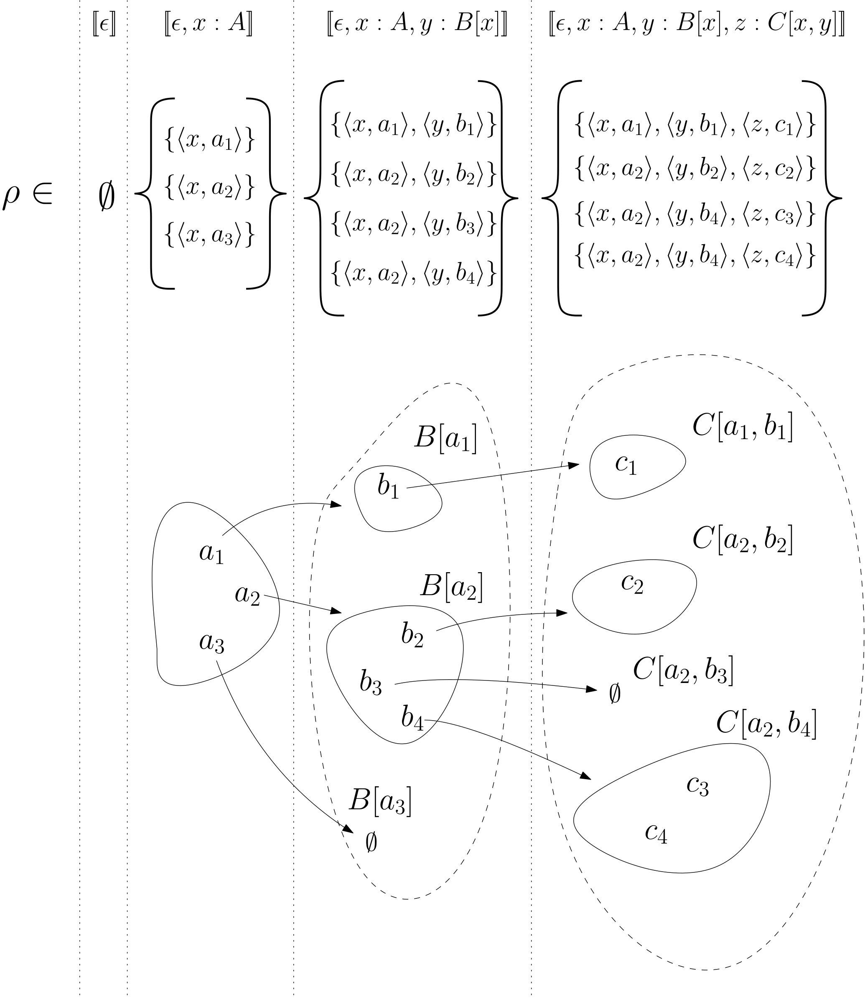
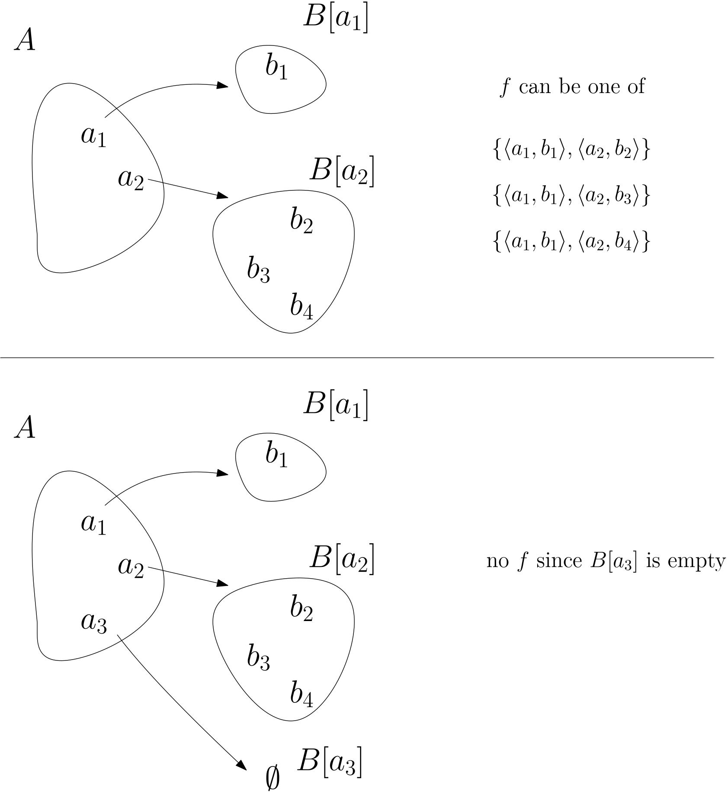
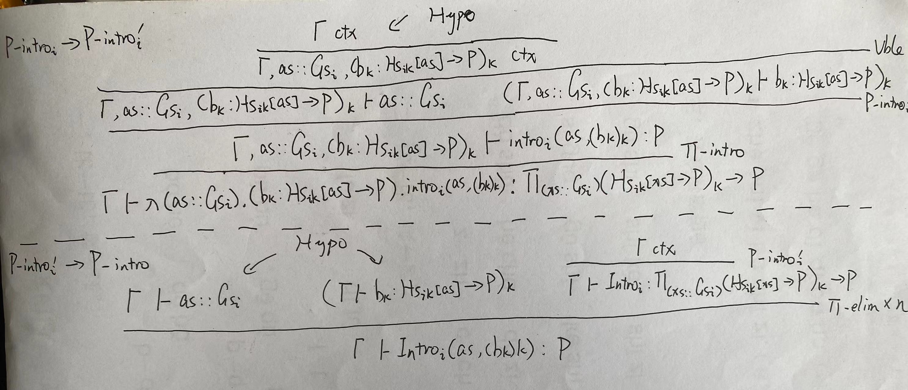

Set semantics for Inductive Type (Part I)
2024-11-12
这篇有点太长了，分开到 Part II
Inference rules 仅仅是形式化语言的规则，这些规则为什么设计成这样呢？ 例如归纳类型（Inductive Type）的 Formation/Introduction rules，以及衍生出来的 Elimination/Computation rules， 它们实际表达的是什么呢？ 理解它的一种方法是将表达式映射成另一个理论里的概念， 在那个理论里进行解释 1， 集合论是其中一个选择， 下面是我阅读 Inductive sets and families in Martin-L of’s type theory and their set-theoretic semantics (Peter Dybjer) 时的摘要和个人理解（有可能出错），感觉这个解释是比较直观的：
- type (family) 解释为 set (family)
- type 里的元素解释为 set 里的元素
- (dependent) function 解释为 set-theoretic 的 function graph 2 （按我理解就是 domain 有定义但 range 没定义，且满足 function 要求的有序对集合，很适合用来表达 dependent function 这种映射到 family 的概念）
- context 解释为 assignment 的集合（assignment 是一个 function，domain 是表达式里的自由变量，range 就是对应变量的解释，或指称之物）
- judgemental equality 解释为（集合的）extensional equality
- inductive type/recursive function 解释为 rule set 的最小闭包，这是主题
本文只包括我个人觉得比较重要的内容，也有一些符号上的小改动，完整的请参考原文
首先涉及到一些记号：
- \(a[x]\) 表示可能带有 \(x\) 的表达式
- \([\![a]\!]\rho\) 表示表达式 \(a\) 在 assignment \(\rho\) 下的指称（denotation）
- \([\![a]\!]\emptyset\) 可缩略为 \([\![a]\!]\)，即空的 assignment 下的指称
- \(\rho_x^{u}\) 表示 \(\rho \cup \{ \langle x, u \rangle \}\)，就是添加自由变量 \(x\) 以及其指称 \(u\) 成为一个新的 assignment
- 所谓 telescope，是一种简写，表示复数个 dependent items，亦可视作
context：
- \(as::As\) 表示：\(a_1:A_1, a_2:A_2[a_1], ..., a_n:A_n[a_1, ..., a_{n-1}]\)，
- \(As\) 则表示上述对应的类型 \(A_1, A_2[x_1](x_1:A_1), ..., A_n[x_1, ..., x_{n-1}](x_1:A_1, ..., x_{n-1}:A_{n-1})\)
- \(us \in [\![As]\!]\rho\) 表示 \(us = \langle u_1, ..., u_n \rangle\) 且 \(u_1 \in [\![A_1]\!]\rho, ... u_n \in [\![A_n[x_1, ..., x_{n-1}]]\!]\rho_{x_1,...x_{n-1}}^{u_1, ...u_{n-1}}\)
- \([\![As]\!]\rho = \{ \langle u_1, ..., u_n \rangle | u_1 \in [\![A_1]\!]\rho, ..., u_n \in [\![A_n[x_1, ..., x_{n-1}]]\!]\rho_{x_1,...x_{n-1}}^{u_1, ...u_{n-1}} \}\)
- \((a_k)_k\) 表示 \(a_1, ..., a_n\)，\((A_k)_k\) 表示 \(A_1, ..., A_n\)，\((a_k : A_k)_k\) 表示 \(a_1 : A_1, ..., a_n : A_n\)
context 的解释：
\([\![\epsilon]\!] = \{ \emptyset \}\)
空 context，即仅有一个空 assignment 的集合
\([\![\Gamma, x:A]\!] = \{ \rho_x^u \; | \; \rho \in [\![\Gamma]\!] \land u \in [\![A]\!]\rho \}\)
非空 context，例子

judgement 的解释：
\([\![\Gamma \vdash A \; type]\!]\)
当且仅当 任意 \(\rho \in [\![\Gamma]\!]\) 时 \([\![A]\!]\rho\) 是一个 set 时成立
\([\![\Gamma \vdash A = A' \; type]\!]\)
当且仅当 任意 \(\rho \in [\![\Gamma]\!]\) 时 \([\![A]\!]\rho = [\![A']\!]\rho\) 两个是相同的 set 时成立
\([\![\Gamma \vdash a:A]\!]\)
当且仅当 任意 \(\rho \in [\![\Gamma]\!]\) 时 \([\![a]\!]\rho \in [\![A]\!]\rho\) 时成立
\([\![\Gamma \vdash a = a':A]\!]\)
当且仅当 任意 \(\rho \in [\![\Gamma]\!]\) 时 \([\![a]\!]\rho \in [\![A]\!]\rho\) 且 \([\![a']\!]\rho \in [\![A]\!]\rho\) 且 \([\![a]\!]\rho = [\![a']\!]\rho\) 时成立
自由变量在一个 assignment \(\rho\) 下的指称：
\[ [\![x]\!]\rho = \rho(x) \]
Dependent function 相关表达式在一个 assignment \(\rho\) 下的指称：
\([\![ \lambda(x:A).b[x] ]\!]\rho = \{ \langle u, [\![b[x]]\!]\rho_x^u \rangle \; | \; u \in [\![A]\!]\rho \}\)
dependent function 解释为 domain 是 \([\![A]\!]\rho\) 的 function graph
\([\![ \underset{(x:A)}{\Large \Pi} B[x] ]\!]\rho = \underset{u \in [\![A]\!]\rho}{\Large \Pi} [\![B[x]]\!]\rho_x^u\)
dependent function type 解释为上述 dependent function \(f\) 的集合，满足： \(f\) 是 \([\![A]\!]\rho\) 上的 function graph 且对所有 \(u \in [\![A]\!]\rho\) 都有 \(f(u) \in [\![B[x]]\!]\rho_x^u\)，例子：

\([\![b(a)]\!]\rho = ([\![b]\!]\rho)([\![a]\!]\rho)\)
function application: 当然 \([\![b]\!]\rho\) 得是一个 function 并且 \([\![a]\!]\rho\) 在其 domain 中
Soundness of Inference rules
给出了不同表达式的解释后，对于每一个 inference rule， 需要证明当前提（在此解释中）成立时，结论（在此解释中）也成立； 这样就能保证由这些 inference rule 推导出的任何结论（在此解释中）都是成立的
paper 里举例子是用了 functoin application rule，这里尝试另外一个，function introduction rule：
\[ \frac{\Gamma,x:A \vdash b[x]:B[x]}{\Gamma \vdash \lambda(x:A).b[x] : \underset{(x:A)}{\Large \Pi} B[x]} \]
前提表示：对任意 \(\rho \in [\![\Gamma]\!]\) 以及任意 \(u \in [\![A]\!]\rho\)，都有 \([\![b[x]]\!]\rho_x^u \in [\![B[x]]\!]\rho_x^u\)
所以：对任意 \(\rho \in [\![\Gamma]\!]\)，可以配对得到 \(f = \{ \langle u, [\![b[x]]\!]\rho_x^u \rangle \; | \; u \in [\![A]\!]\rho \}\) ，这正是 \([\![ \lambda(x:A).b[x] ]\!]\rho\)
且对所有 \(u \in [\![A]\!]\rho\) 有 \(f(u) \in [\![B[x]]\!]\rho_x^u\)，故 \(f \in [\![ \underset{(x:A)}{\Large \Pi} B[x] ]\!]\rho\)，类型也对上了
对于一般性的 structure rules 和 \(\Pi\) 类型的 rules，应该都可以通过类似的方法证明它们的 soundness，对于 inductive type 相关的 rule，则首先需要有 inductive type 的解释：
Inductive Set
定义：
在一个基础集合 \(U\) 上，一个 rule（注意不是 inference rule）是一个有序对 \(\langle u, v \rangle\)，其中 \(u \subseteq U\) 称为 premisses, \(v \in U\) 称为 conclusion，一般写成
\[ \frac{u}{v} \]
令 \(\Phi\) 是一个 rule 的集合（rule set），一个集合 \(w\) 如果满足
\[ (\frac{u}{v} \in \Phi \land u \subseteq w) \rightarrow v \in w \]
则称为 \(\Phi-closed\)（\(\Phi\) 闭包），也就是 \(w\) 如果包含一个 rule 的 premisses 则也包含其 conclusion
存在一个最小的 \(\Phi-closed\) 集合（最小闭包）
\[ \mathcal{I}(\Phi) = {\Large \cap} \{ w \; | \; w \; is \; \Phi-closed \} \]
这个集合就称为由 \(\Phi\) 定义的 Inductive Set，这个 \(\mathcal{I}(\Phi)\) 是存在的，因为：
首先至少有一个 \(\Phi-closed\) 的集合存在，例如 \(\Phi\) 中所有 conclusion 组成的集合：
\[ Concl(\Phi) = \{v \; | \; \frac{u}{v} \in \Phi \} \]
其次，多个 \(\Phi-closed\) 的集合的交集 \(w = {\Large \cap} \{ w_1, w_2, ... \}\) 仍然是 \(\Phi-closed\) 的，因为
- 若一个 rule 的 premisses \(u\) 是 \(w\) 的子集
- 则 \(u\) 也是任意参与的 \(w_i\) 的子集
- 由闭合性 conclusion \(v\) 也属于任意参与的 \(w_i\)
- 所以最终 \(v\) 也属于 \(w\)
所以所有 \(\Phi-closed\) 的交集 \(\mathcal{I}(\Phi)\) 是一个最小的 \(\Phi-closed\) 集合 3，是所有 \(\Phi-closed\) 集合的子集，例如：\(\mathcal{I}(\Phi) \subseteq Concl(\Phi)\)
\(\Phi\) 上的 Induction Principle 其实就是指：只要一个 \(U\) 上的集合它是 \(\Phi-closed\) 的，则 \(\mathcal{I}(\Phi)\) 是它的子集
一些有用的性质：
假设有两个 rule set \(\Phi \subseteq \Phi'\)，则 \(\mathcal{I}(\Phi) \subseteq \mathcal{I}(\Phi')\)， 即更大的 rule set 有更大的 inductive set，因为更多的规则理应由更多的元素才能“覆盖”
只需要证明 \(\mathcal{I}(\Phi')\) 也是 \(\Phi-closed\) 即可证明 \(\mathcal{I}(\Phi) \subseteq \mathcal{I}(\Phi')\)；假设 \(\frac{u}{v} \in \Phi\) 且 \(u \subseteq \mathcal{I}(\Phi')\)：
于是 \(\frac{u}{v} \in \Phi \subseteq \Phi'\)，由 \(\mathcal{I}(\Phi')\) 的 \(\Phi'-closed\) 性质得 \(v \in \mathcal{I}(\Phi')\)，故 \(\mathcal{I}(\Phi')\) 也是 \(\Phi-closed\) 的
我还发现 rule set 是允许有“杂质”的规则的，比如我们可以这样精简 rule set，令：
\[ \Theta = \mathcal{R}(\Phi) = \{ \frac{u}{v} \; | \; \frac{u}{v} \in \Phi \land u \subseteq \mathcal{I}(\Phi) \} \]
有
\[ \mathcal{I}(\Theta) = \mathcal{I}(\Phi) \]
即只保留那些 premisses 是 \(\mathcal{I}(\Phi)\) 子集的规则（或删掉 premisses 不全在 \((\Phi)\) 的规则），两个 rule set 的 Inductive Set 仍是相同的
- 由于 \(\Theta \subseteq \Phi\)，由上面的性质可知 \(\mathcal{I}(\Theta) \subseteq \mathcal{I}(\Phi)\)
- 只要证明 \(\mathcal{I}(\Theta)\) 是
\(\Phi-closed\) 的则 \(\mathcal{I}(\Phi) \subseteq
\mathcal{I}(\Theta)\)；假设 \(\frac{u}{v} \in \Phi\) 且 \(u \subseteq \mathcal{I}(\Theta)\)：
- 由 1 得 \(u \subseteq \mathcal{I}(\Phi)\)，按 \(\Theta\) 定义可知 \(\frac{u}{v} \in \Theta\)
- 因 \(\mathcal{I}(\Theta)\) 的 \(\Theta\) 封闭性故 \(v \in \mathcal{I}(\Theta)\)
如果对 \(\Theta\) 再执行 \(R\) 会怎么样呢？
\[ \begin{split} \mathcal{R}(\Theta) & = \{ \frac{u}{v} \; | \; \frac{u}{v} \in \Theta \land u \subseteq \mathcal{I}(\Theta) \} \\ & = \{ \frac{u}{v} \; | \; \frac{u}{v} \in \Theta \land u \subseteq \mathcal{I}(\Phi) \} \\ & = \{ \frac{u}{v} \; | \; \frac{u}{v} \in \Theta \} \\ & = \Theta \\ \end{split} \]
已经是最精简的了
\(Concl(\Theta) = \mathcal{I}(\Phi)\)，因为 \(\mathcal{I}(\Theta) \subseteq Concl(\Theta) \subseteq \mathcal{I}(\Phi)\)，右侧 \(\subseteq\) 是因为如果 \(v \in Concl(\Theta)\) 则有 \(\frac{u}{v} \in \Phi \land u \subseteq \mathcal{I}(\Phi)\)，于是 \(v \in \mathcal{I}(\Phi)\)； 即 \(v \in \mathcal{I}(\Phi)\) 当且仅当 \(\Phi\) 中存在 conclusion 是 \(v\) 且 premisses 都在 \(\mathcal{I}(\Phi)\) 中的规则
Inductive Type
Formation rule：
\[ \frac{\Gamma \; ctx}{\Gamma \vdash P \; type} \; \tiny{P-form} \]
Introduction rule（0+ 条），第 \(i\) 条一般形如：
\[ \frac{\Gamma \vdash as::Gs_i \qquad (\Gamma \vdash b_k:Hs_{ik}[as] \rightarrow P)_k}{\Gamma \vdash intro_i(as, (b_k)_k) : P} \; \tiny{P-intro_i} \]
其中 telescope \(Gs_i\) 4 不依赖于上下文，而 arity \(Hs_{ik}[as]\) 5 则依赖于 \(as\)， 也就是对于任意 \(\rho \in [\![\Gamma]\!]\)：
- \([\![Gs_i]\!]\rho = [\![Gs_i]\!]\) 即 \(\rho\) 的改变并不会改变其所指
- \([\![Hs_{ik}[as]]\!]\rho = [\![Hs_{ik}[as]]\!]_{as}^{[\![as]\!]\rho}\) 即只有 \(as\) 所指的改变才能改变其所指
一个例子（假设已经定义了自然数 \(\mathbb{N}\) 以及 finite set \(\mathbb{F}\)）：
\[ \frac{\Gamma \vdash a : \mathbb{N} \qquad \Gamma \vdash b : \mathbb{F} \; a \rightarrow \mathbb{X}}{\Gamma \vdash intro_{\mathbb{X}}(a, b) : \mathbb{X}} \]
这里 \([\![\mathbb{N}]\!]\) 是一个固定所指，\([\![\mathbb{F} \; a]\!]_{a}^{[\![a]\!]\rho}\) 所指则随着 \([\![a]\!]\rho\) 变化而变
另外这里的 \(a\) 和 \(b\) 是 metavariable，代表的是 object language 里的表达式；例如假设有一个具体的 context \(\Delta := f : \mathbb{N} \rightarrow \mathbb{N}, \; g : {\Large \Pi}_{(x : \mathbb{N})} \mathbb{F} \; (f \; x) \rightarrow \mathbb{X}, \; n : \mathbb{N}\)， 则有
- \(\Delta \vdash f \; n : \mathbb{N}\)
- \(\Delta \vdash g \; n : \mathbb{F} \; (f \; n) \rightarrow \mathbb{X}\)
- 得出 \(\Delta \vdash intro_{\mathbb{X}}(f \; n, g \; n) : \mathbb{X}\)
\(a\) 和 \(b\) 分别代表 \(f \; n\) 和 \(g \; n\)
Introduction rule 还有另一种形式（像 agda 里定义 constructor 一样）：
\[ \frac{\Gamma \; ctx}{\Gamma \vdash Intro_i : \underset{(as::Gs_i)}{\Large \Pi} (Hs_{ik}[as] \rightarrow P)_k \rightarrow P} \; \tiny{P-intro_i'} \]
所不同的是，\(as\) 在这里是 object language 里的变量，而不是 metavariable 了
上面两种形式是等价的：

Interpretation of Inductive Type
Inductive Type \(P\) 解释为一个足够大的集合 \(U\) 上的 inductive set
\[ [\![P]\!] = \mathcal{I}(\Phi_P) \]
其 rule set \(\Phi_P\) 定义为
\[ \newcommand{\hlU}{\textcolor{blue}{U}} \Phi_P = \underset{i}{\LARGE \cup} \{ \frac{{\Large \cup}_{k} \; range(v_k)}{\langle |intro_i|, us, (v_k)_k \rangle} | us \in [\![Gs_i]\!], (v_k \in [\![Hs_{ik}[xs]]\!]_{xs}^{us} \rightarrow \hlU)_k \} \]
注意式子里使用 \(U\) 而非 \([\![P]\!]\)，这是因为它尚未定义，显然这个 rule set 包含大量 “杂质”，因为 \(U\) 上的元素都可以作为 premisses； 不过没关系，根据上面提到的性质，当 \([\![P]\!] = \mathcal{I}(\Phi_P)\) 确立下来后， 这个 rule set 实际上可以替换为只保留 premisses 是 \([\![P]\!]\) 子集的规则的 rule set: 6
\[ \newcommand{\hlP}{\textcolor{blue}{[\![P]\!]}} \Theta_P = \underset{i}{\LARGE \cup} \{ \frac{{\Large \cup}_{k} \; range(v_k)}{\langle |intro_i|, us, (v_k)_k \rangle} | us \in [\![Gs_i]\!], (v_k \in [\![Hs_{ik}[xs]]\!]_{xs}^{us} \rightarrow \hlP)_k \} \]
两者具有相同的 inductive set，后者就比较符合我们平时的直观了：由 \(P\) 中的元素构造出也属于 \(P\) 中的元素
那么这个 \(U\) 怎么选取才能让 \(\Phi_P\) 是其上的 rule set 呢？由于 premisses 已经是 \(U\) 的子集了，我们只需要保证 \(\langle |intro_i|, us, (v_k)_k \rangle \in U\) 即可；文章里令 \(U = V_\alpha\) 7，即第 \(\alpha\) 层的 Von Neumann 集合层级，且满足：
- \(V_\alpha\) 对（有限）元组封闭：这要求 \(\alpha\) 是极限序数（limit ordinal）；因为假如 \(a_1, a_2 \in V_\alpha\)， 由定义可知存在 \(\beta_1, \beta_2 < \alpha\) 使得 \(a_1 \in V_{\beta_1}, a_2 \in V_{\beta_2}\)， 于是 \(\langle a_1, a_2 \rangle = \{ \{ a_1 \}, \{ a_1, a_2 \} \} \in V_{max(\beta_1, \beta_2) + 2} \subseteq V_\alpha\)， 这是因为 \(\alpha\) 是极限序数，必然大于 \(max(\beta_1, \beta_2)\) 的有限后继；反之如果 \(\alpha\) 仅仅是个后继序数， 则存在反例证明对元组不封闭
- 于是只需要保证 \(|intro_i| \in V_\alpha\) 且 \(us \in V_\alpha\) 且 \((v_k)_k \in V_\alpha\) 即可， 因为 \(\langle |intro_i|, us, (v_k)_k \rangle \in V_\alpha\) 就是前者的有限元组而已（\(k\) 是有限的吧？）
- 由于 \(|intro_i|\) 只是用来区分哪条 introduction rule，用自然数表示即可，即 \(|intro_i| \in \omega\)
- 要令 \(us \in V_\alpha\)，只需 \([\![Gs_i]\!] \subseteq V_\alpha\) 即可
- 要令 \(v_k \in V_\alpha\)，首先需要 \([\![Hs_{ik}[xs]]\!]_{xs}^{us} \subseteq V_\alpha\)， 这样对于每一个 \(ws \in [\![Hs_{ik}[xs]]\!]_{xs}^{us}\) 都有一个序数 \(\beta_{ws} < \alpha\) 使得 \(\langle ws, v_k(ws) \rangle \in V_{\beta_{ws}}\)（因为此时 \(ws, v_k(ws) \in V_\alpha\)，而 \(V_\alpha\) 元组封闭）； 假如 \(\beta_{ws}\) 的上确界严格小于 \(\alpha\)，即 \(\beta = sup_{ws \in [\![Hs_{ik}[xs]]\!]_{xs}^{us}}\beta_{ws} < \alpha\)， 则 \(\langle ws, v_k(ws) \rangle \in V_\beta\) 于是 \(v_k = \{ \langle ws, v_k(ws) \rangle | ws \in [\![Hs_{ik}[xs]]\!]_{xs}^{us} \} \subseteq V_\beta\) 于是 \(v_k \in V_\alpha\)；那怎么能满足上面的上确界条件呢？文章里是给出的条件是 \(card \; [\![Hs_{ik}[xs]]\!]_{xs}^{us} < card \; \alpha\)， 但。。我不太明白（我能明白如果基数大于等于 \(\alpha\) 时是不行的，例如可以对于每一个 \(\alpha\) 的层级都取一个，这样 \(\beta\) 只能等于 \(\alpha\)； 但是不是只要小于 \(\alpha\) 就充分呢？）TODO !!!
剩下元素的解释很直接：
\[ [\![intro_i(as, (b_k)_k)]\!]\rho = \langle |intro_i|, [\![as]\!]\rho, ([\![b_k]\!]\rho)_k \rangle \]
Soundness of inference rules
对于 Formation rule，上面我们已经给出了 \([\![P]\!]\) 是一个集合的解释
对于 Introduction rule，前提和结论的 context 都是同一个 \(\Gamma\)， 其中前提的意思是对于任意 \(\rho \in [\![\Gamma]\!]\)，有
- \(us = [\![as]\!]\rho \in [\![Gs_i]\!]\rho = [\![Gs_i]\!]\)，
- \(v_k = [\![b_k]\!]\rho \in [\![Hs_{ik}[as] \rightarrow P]\!]\rho = [\![Hs_{ik}[as]]\!]\rho \rightarrow [\![P]\!]\rho = [\![Hs_{ik}[as]]\!]_{as}^{us} \rightarrow [\![P]\!]\)（对所有 \(k\)）
显然 \(\Phi_P\)（或精简过的 \(\Theta_P\)）中存在对应 \(us\) 以及 \((v_k)_k\) 的一条 rule， 而 \({\Large \cup}_{k} \; range(v_k) \subseteq [\![P]\!]\)，由 \([\![P]\!]\) 的 \(\Phi_P\) 封闭性，故
\[ [\![intro_i(as, (b_k)_k)]\!]\rho = \langle |intro_i|, us, (v_k)_k \rangle \in [\![P]\!] \]
Absurdity
Bottom 类型拥有 0 条 introduction rule，所以 \([\![\bot]\!] = \emptyset\)
https://plato.stanford.edu/entries/type-theory-intuitionistic/#MathMode↩︎
\(\mathcal{I}(\Phi)\) 有可能是空集↩︎
相当于 \(\Gamma \vdash a_1:G_{i1} \qquad ... \qquad \Gamma \vdash a_n:G_{in}[a_1, ..., a_{n-1}]\)↩︎
这里 \(Hs_{ik}[as]\) 感觉应该理解为一个(复合)类型 e.g. \(\Sigma\)↩︎
因为 \(v_k \in [\![Hs_{ik}[xs]]\!]_{xs}^{us} \rightarrow U \land range(v_k) \subseteq [\![P]\!]\) 当且仅当 \(v_k \in [\![Hs_{ik}[xs]]\!]_{xs}^{us} \rightarrow [\![P]\!]\)↩︎
补充一些定义：
序数 Ordinal Number 可以是
- 0，集合论里用 \(\emptyset\) 表示
- 后继序数 successor
ordinal，集合论里用 \(\beta \cup \{ \beta
\}\) 表示 \(\beta\)
的后继，例子：
- \(1 = \{ 0 \} = \{ \emptyset \}\)
- \(2 = \{ 0, 1 \} = \{ \emptyset, \{ \emptyset \} \}\)
- \(3 = \{ 0, 1, 2 \} = \{ \emptyset, \{ \emptyset \}, \{ \emptyset, \{ \emptyset \} \} \}\)
- …
- \(\omega + 1 = \omega \cup \{ \omega \} = \mathbb{N} \cup \{ \mathbb{N} \} = \{ 0, 1, 2, ..., \mathbb{N} \}\) （\(\omega\) 是最小的极限序数，见下）
- …
- 极限序数 limit
ordinal，定义是：一个序数 \(\lambda\)，对于每一个比它小的序数 \(\beta < \lambda\)，
总存在一个两者间的序数 \(\beta < \gamma
< \lambda\)；例如最小的极限序数 \(\omega\) 在集合论里就是用全体自然数集合
\(\mathbb{N}\) 表示， 因为对于任意
\(n < \omega\)，有 \(n < n+1 < \omega\)，例子
- \(\omega = \mathbb{N}\)
- \(\omega + \omega\)
- …
对应 von Neumann 集合层级：
- \(V_0 := \emptyset\)
- 对任何序数 \(\beta\)，\(V_{\beta+1} := P(V_\beta)\)，即 \(V_\beta\) 的的幂集（所有子集的集合），例子
- \(V_1 = \{ \emptyset \}\)
- \(V_2 = \{ \emptyset, \{ \emptyset \} \}\)
- \(V_3 = \{ \emptyset, \{ \emptyset \}, \{\{ \emptyset \}\}, \{ \emptyset, \{ \emptyset \} \} \}\)
- …
- 对任何极限序数 \(\lambda\)，\(V_{\lambda} := \underset{\beta < \lambda}{\Large \cup}V_\beta\)
注意每一层级也都包含所有低层级集合里的所有元素↩︎